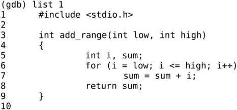
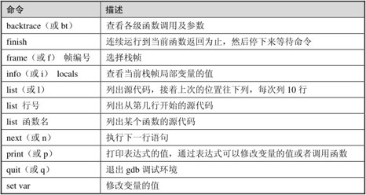
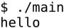
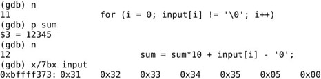
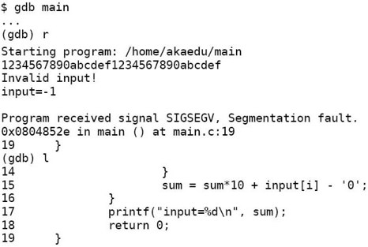

程序中除了一目了然的Bug之外都需要一定的调试手段来分析到底错在哪。到目前为止我们的调试手段只有一种：根据程序执行时的出错现象假设错误原因，然后在代码中适当的位置插入printf，执行程序并分析打印结果，如果结果和预期的一样，基本上证明了自己假设的错误原因，就可以动手修正Bug了，如果结果和预期的不一样，就根据结果做进一步的假设和分析。本章我们介绍一种很强大的调试工具gdb，可以完全操控程序的运行，使得程序就像你手里的玩具一样，叫它走就走，叫它停就停，并且随时可以查看程序中所有的内部状态，比如各变量的值、传给函数的参数、当前执行的代码行等。掌握了gdb的用法之后，调试手段就更加丰富了。但要注意，即使调试手段丰富了，调试的基本思想仍然是“分析现象→假设错误原因→产生新的现象去验证假设”这样一个循环，根据现象如何假设错误原因，以及如何设计新的现象去验证假设，这都需要非常严密的分析和思考，如果因为手里有了强大的工具就滥用而忽略了分析过程，往往会治标不治本地修正Bug，导致一个错误现象消失了但Bug仍然存在，甚至是把程序越改越错。本章通过初学者易犯的几个错误实例来讲解如何使用gdb调试程序，在每个实例后面总结一部分常用的gdb命令。
看下面的程序：
例10.1 函数调试实例
add_range函数从low加到high，在main函数中首先从1加到10，把结果保存下来，然后从1加到100，再把结果保存下来，最后打印的两个结果是：
第一个结果正确，第二个结果显然不正确㉔，在小学我们就听说过高斯小时候的故事，从1加到100应该是5050。一段代码，第一次运行结果是对的，第二次运行却不对，这是很常见的一类错误现象，这种情况一方面要怀疑代码，另一方面更要怀疑数据：第一次和第二次运行的都是同一段代码，如果代码是错的，那第一次的结果为什么能对呢？很可能是第二次运行时相关的状态数据错了，错误的数据导致了错误的结果。在动手调试之前，读者先试试只看代码能不能看出错误原因，只要前面几章学得扎实就应该能看出来。
在编译时要加上-g选项，生成的可执行文件才能用gdb进行源码级调试：
-g选项的作用是在可执行文件中加入源代码的信息，比如可执行文件中第几条机器指令对应源代码的第几行，但并不是把整个源文件嵌入到可执行文件中，所以在调试时必须保证gdb能找到源文件。gdb提供一个类似Shell的命令行环境，上面的(gdb)就是提示符，在这个提示符下输入help可以查看命令的类别：
也可以进一步查看某一类别中有哪些命令，例如查看files类别下有哪些命令可用：
现在试试用list命令从第一行开始列出源代码：

一次只列10行，如果要从第11行开始继续列源代码可以再输入一次
也可以什么都不输直接敲回车，gdb提供了一个很方便的功能，在提示符下直接敲回车表示重复上一条命令。
gdb的很多常用命令有简写形式，例如list命令可以写成l，要列一个函数的源代码也可以用函数名做参数：
现在退出gdb的环境：
我们做一个实验，把源代码改名或移到别处再用gdb调试，这样就列不出源代码了：
可见gcc的-g选项并不是把源代码嵌入到可执行文件中，在调试时也需要源文件。现在把源代码恢复原样，我们继续调试。首先用start命令开始执行程序：
gdb停在main函数中变量定义之后的第一条语句处等待我们发命令，gdb列出的这条语句是即将执行的下一条语句。我们可以用next命令（简写为n）控制这些语句一条一条地执行：
用n命令依次执行两行赋值语句和一行打印语句，在执行打印语句时结果立刻打出来了，然后停在return语句之前等待我们发命令。虽然我们完全控制了程序的执行，但仍然看不出哪里错了，因为错误不在main函数中而在add_range函数中，现在用start命令重新来过，这次用step命令（简写为s）钻进add_range函数中去跟踪执行：
这次停在了add_range函数中变量定义之后的第一条语句处。在函数中有几种查看状态的办法，backtrace命令（简写为bt）可以查看函数调用的栈帧：
可见当前的add_range函数是被main函数调用的，main传进来的参数是low=1, high=10。main函数的栈帧编号为1，add_range的栈帧编号为0。现在可以用info命令（简写为i）查看add_range函数局部变量的值：
如果想查看main函数当前局部变量的值也可以做到，先用frame命令（简写为f）选择1号栈帧然后再查看局部变量：
注意到result数组中很多元素具有杂乱无章的值，我们知道未经初始化的局部变量具有不确定的值。到目前为止一切正常。用s或n往下走几步，然后用print命令（简写为p）打印出变量sum的值：
第一次循环i是1，第二次循环i是2，加起来是3，没错。这里的$1表示gdb保存着这些中间结果，$后面的编号会自动增长，在命令中可以用$1、$2、$3等编号代替相应的值。由于我们本来就知道第一次调用的结果是正确的，再往下跟也没意义了，可以用finish命令让程序一直运行到从当前函数返回为止：
返回值是55，当前正准备执行赋值操作，用s命令赋值，然后查看result数组：

第一个值55确实赋给了result数组的第0个元素。下面用s命令进入第二次add_range调用，进入之后首先查看参数和局部变量：
由于局部变量i和sum没初始化，所以具有不确定的值，又由于两次调用是挨着的，i和sum正好取了上次调用时的值，原来这跟例3.7是一样的道理，只不过我这次举的例子设法让局部变量sum在第一次调用时初值为0而第二次调用时初值不为0。i的初值不确定没关系，在for循环中首先会把i赋值为low，但sum如果初值不是0，累加得到的结果就错了。好了，我们已经找到错误原因，可以退出gdb修改源代码了。如果我们不想浪费这次调试机会，可以在gdb中马上把sum的初值改为0继续运行，看看这一处改了之后还有没有别的Bug：
这样结果就对了。修改变量的值除了用set命令之外也可以用print命令，因为print命令后面跟的是表达式，而我们知道赋值和函数调用也都是表达式，所以也可以用print命令修改变量的值或者调用函数：
我们讲过，printf的返回值表示实际打印的字符数，所以$6的结果是13。总结一下本节用到的gdb命令，如表10.1所示。
表10.1 gdb基本命令1

1．用gdb一步一步跟踪第5.3节讲的factorial函数，对照着图5.2查看各层栈帧的变化情况，练习本节所学的各种gdb命令。
看以下程序：
例10.2 断点调试实例
这个程序的作用是：首先从键盘读入一串数字存到字符数组input中，再转换成整型存到sum中，然后打印出来，一直这样循环下去。scanf("%s", input);这个调用的功能是等待用户输入一个字符串并回车，scanf把其中第一段非空白（非空格、Tab、换行）的字符串保存到input数组中，并自动在末尾添加'\0'。接下来的循环从左到右扫描字符串并把每个数字累加到结果中，例如输入"2345"，则循环累加的过程是(((0×10+2)×10+3)×10+4)×10+5=2345。注意字符型的'2'要减去'0'的ASCII码才能转换成整数值2。下面编译运行程序看看有什么问题：
又是这种现象，第一次是对的，第二次就不对。可是这个程序我们并没有忘了赋初值，不仅sum赋了初值，连不必赋初值的i都赋了初值。读者先试试只看代码能不能看出错误原因。下面来调试：
有了上一次的经验，sum被列为重点怀疑对象，我们可以用display命令使得每次停下来的时候都显示当前sum的值，然后继续往下走：
undisplay命令可以取消跟踪显示，变量sum的编号是1，可以用undisplay 1命令取消它的跟踪显示。这个循环应该没有问题，因为上面第一次输入时打印的结果是正确的。如果不想一步一步走这个循环，可以用break命令（简写为b）在第9行设一个断点（Breakpoint）：
break命令的参数也可以是函数名，表示在某个函数开头设断点。现在用continue命令（简写为c）连续运行而非单步运行，程序到达断点会自动停下来，这样就可以停在下一次循环的开头：
然后输入新的字符串准备转换：
问题暴露出来了，新的转换应该再次从0开始累加，而sum现在已经是123了，原因在于新的循环没有把sum归零。可见断点有助于快速跳过没有问题的代码，然后在有问题的代码上慢慢走慢慢分析，“断点加单步”是使用调试器的基本方法。至于应该在哪里设置断点，怎么知道哪些代码可以跳过而哪些代码要慢慢走，也要通过对错误现象的分析和假设来确定，以前我们用printf打印中间结果时也要分析应该在哪里插入printf，打印哪些中间结果，调试的基本思路是一样的。一次调试可以设置多个断点，用info命令可以查看已经设置的断点：
每个断点都有一个编号，可以用编号指定删除某个断点：
有时候一个断点暂时不用可以禁用掉而不必删除，这样以后想用的时候可以直接启用，而不必重新从代码里找应该在哪一行设断点：
gdb的断点功能非常灵活，还可以设置断点在满足某个条件时才激活，例如我们仍然在循环开头设置断点，但是仅当sum不等于0时才中断，然后用run命令（简写为r）重新从程序开头连续运行：
结果是第一次执行scanf之前没有中断，第二次却中断了。总结一下本节用到的gdb命令，如表10.2所示。
表10.2 gdb基本命令2
1．看下面的程序：
首先用字符串"hello"初始化一个字符数组str（算上'\0'共6个字符）。然后用空字符串""初始化一个同样长的字符数组reverse_str，相当于所有元素用'\0'初始化。然后打印str，把str倒序存入reverse_str，再打印reverse_str。然而结果并不正确：

我们本来希望reverse_str打印出来是olleh，结果打出来一个空行。重点怀疑对象肯定是循环，那么简单验算一下，i=0时，reverse_str[5]=str[0]，也就是'h'，i=1时，reverse_str[4]=str[1]，也就是'e'，依此类推，i=0,1,2,3,4，共5次循环，正好把h,e,l,l,o五个字母给倒过来了，哪里不对了？请用gdb跟踪循环，找出错误原因并改正。
接着上一节的步骤，经过调试我们知道，虽然sum已经赋了初值0，但仍需要在while (1)循环的开头加上sum = 0;：
例10.3 观察点调试实例
使用scanf函数是非常凶险的，即使修正了这个Bug也还存在很多问题。如果输入的字符串超长了会怎么样？我们知道数组访问越界是不会检查的，所以scanf会写出界。现象是这样的：
下面用调试器看看最后这个诡异的结果是怎么出来的。
input数组只有5个元素，写出界的是scanf自动添的'\0'，用x命令查看会更清楚一些：
x命令打印指定存储单元里保存的内容，后缀7bx是打印格式，7表示打印7组，b表示每个字节一组，x表示按十六进制格式打印㉕，x/7bx这条命令从input数组的第一个字节开始连续打印7个字节。前5个字节是input数组的存储单元，打印的正是十六进制ASCII码的'1'到'5'，第6个字节是写出界的'\0'。
根据运行结果，前4个字符转成数字都没错，第5个错了，也就是i从0到3的循环都没错，我们设一个条件断点从i等于4开始单步调试：
现在sum是1234没错，根据运行结果是123407，我们知道即将进行的这步计算肯定要出错，算出来应该是12340，那就是说input[4]肯定不是'5'了，事实证明这个推理是不严谨的：
input[4]的确是0x35。再分析一下发现，产生123407这个结果还有另外一种可能，就是在下一次循环中123450不是加上而是减去一个数得到123407。可现在不是到字符串末尾了吗？怎么会有下一次循环呢？注意到循环控制条件是input[i] !='\0'，而本来应该是0x00的位置现在莫名其妙地变成了0x04，因此循环不会结束。继续单步调试：

进入下一次循环，原来的0x04又莫名其妙地变成了0x05，这是怎么回事？这个暂时解释不了，但123407这个结果可以解释了，是12345×10 + 0x05 - 0x30得到的，虽然多循环了一次，但下次一定会退出循环了，因为0x05的后面是'\0'。
input[4]后面那个字节到底是什么时候变的？可以用观察点（Watchpoint）来跟踪。我们知道断点是当程序执行到某一代码行时中断，而观察点是当程序访问某个存储单元时中断，如果我们不知道某个存储单元是在哪里被改动的，这时候观察点尤其有用。下面删除原来设的断点，从头执行程序，重复上次的输入，用watch命令设置观察点，跟踪input[4]后面那个字节（可以用input[5]表示，虽然这是访问越界）：
已经很明显了，每次都是回到for循环开头的时候改变了input[5]的值，而且是每次加1，而循环变量i正是在每次回到循环开头之前加1，原来input[5]就是变量i的存储单元，换句话说，i的存储单元是紧跟在input数组后面的。
修正这个Bug对初学者来说有一定难度。如果你发现了这个Bug却没想到数组访问越界这一点，也许一时想不出原因，就会先去处理另外一个更容易修正的Bug：如果输入的不是数字而是字母或别的符号也能算出结果来。这显然是不对的，可以在循环中加上判断条件检查非法字符：
然后你会惊喜地发现，不仅输入字母会报错，输入超长也会报错：
似乎是两个Bug一起解决掉了，但这是治标不治本的解决方法。看起来输入超长的错误是不会出现了，但只要没有找到根本原因就不可能真的解决掉，等到条件一变，它可能又冒出来了，在下一节你会看到它又以一种新的形式冒出来了。现在请思考一下为什么加上检查非法字符的代码之后输入超长也会报错。最后总结一下本节用到的gdb命令，如表10.3所示。
表10.3 gdb基本命令3
如果程序运行时出现段错误，用gdb可以很容易定位到究竟是哪一行引发的段错误，例如这个小程序：
例10.4 段错误调试实例一
调试过程如下：
在gdb中运行，遇到段错误会自动停下来，这时可以用命令查看当前执行到哪一行代码了。gdb显示段错误出现在_IO_vfscanf函数中，用bt命令可以看到这个函数是被main.c的第6行间接调用的，也就是scanf这行代码引发的段错误。仔细观察程序发现是man前面少了个&。
继续调试上一节的程序，上一节最后提出修正Bug的方法是在循环中加上判断条件，如果不是数字就报错退出，不仅输入字母可以报错退出，输入超长的字符串也会报错退出。表面上看这个程序无论怎么运行都不出错了，但假如我们把while(1)循环去掉，每次执行程序只转换一个数：
例10.5 段错误调试实例二
然后输入一个超长的字符串，看看会发生什么：
看起来正常。再来一次，这次输个更长的：
又出段错误了。我们按照同样的方法用gdb调试看看：

gdb指出，段错误发生在第19行。可是这一行什么都没有啊，只有表示main函数结束的}括号。这可以算是一条规律，如果某个函数的局部变量发生访问越界，有可能并不立即产生段错误，而是在函数返回时产生段错误。
想要写出Bug-free的程序是非常不容易的，即使scanf读入字符串这么一个简单的函数调用都会隐藏着各种各样的错误，有些错误现象是我们暂时没法解释的：为什么变量i的存储单元紧跟在input数组后面？为什么同样是访问越界，有时出段错误有时不出段错误？为什么访问越界的段错误在函数返回时才出现？还有最基本的问题，为什么scanf输入整型变量就必须要加&，否则就出段错误，而输入字符串就不要加&？这些问题在后续章节中都会解释清楚。
其实现在讲scanf这个函数为时过早，读者还不具备充足的基础知识。但还是有必要讲的，学完这一阶段之后读者应该能写出有用的程序了，然而一个只有输出而没有输入的程序算不上是有用的程序，另一方面也让读者认识到，学C语言不可能不去了解底层计算机体系结构和操作系统的原理，不了解底层原理连一个scanf函数都没办法用好，更没有办法保证写出正确的程序。除了要理解底层工作原理之外，scanf这个函数的用法也确实是相当复杂，要用得准确无误是挺难的，本书将在第24.2.9节详细解释这个函数。